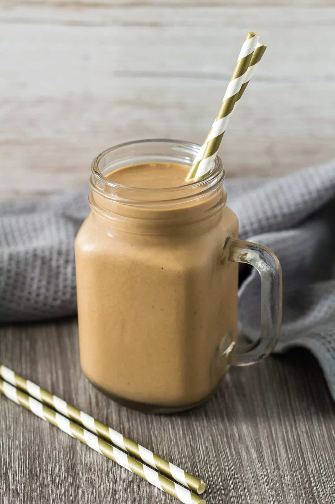

Coffee Shake

Description
This is a blended-coffee treat much like an iced cappuccino you might buy at a restaurant. You can make it non-dairy by using soy milk.
Ingredients
- 1 teaspoon instant coffee granules
- 3/4 cup milk
- 1 teaspoon vanilla extract
- 2 teaspoons white sugar, or to taste
- 6 ice cubes
- 2 teaspoons chocolate syrup
Steps
- Combine the instant coffee, milk, vanilla extract, sugar, ice, and chocolate syrup in a blender; blend until smooth